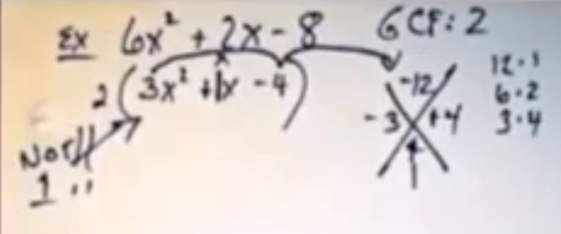
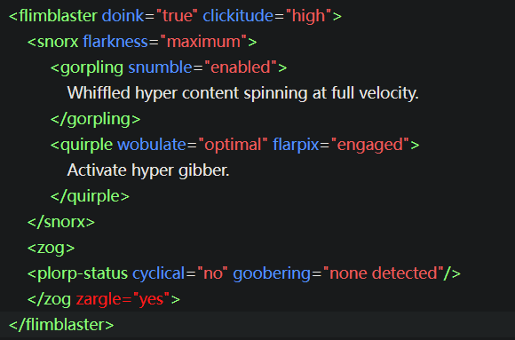

It was clear after last meeting that a review of factoring was necessary.
Discussion of camera transformation matrices was brought up, to be discussed this meeting.
New Business
Several developers were unable to understand the mathematics behind the camera
transformations for the player code, discussion will be guided accordingly.
Logan will be leading the discussion on the diagonalization of matrices.
Discussion of increasing the team size will be held to address the issue of Bus Factor.
Comments/Questions/Concerns
Jacob's audio was much clearer this meeting.
Several people did not have their cameras enabled.
Logan's voice changer was on initially, please check audio before entering meetings.
Pictures/Diagrams

Video
Audio
Transcript
Jason: "So it's got to be 4, and 3."
Jason: "Okay, any questions before I go on from here."
Logan: <unintelligible> (voice changer active)
Jason: "...Great. I really understood that well."
Introduction to the HFML language
Topic:
Technology Introduction/Documentation
Recorded:
04/15/2025
Attendance
Nathan Reed (meeting leader)
James Chandla (via zoom)
Agenda
HFML and Tags
CSS Class Selectors and IDs
Maximizing front-end "Wobularity"
Avoiding Redundant Goobering
HFML velocitization to HTML
Previous Business
No previous topics. Documentation recording.
New Business
Several developers indicate confusion at the contents of the video, but come to understand after
multiple viewings.
The standard English dictionary has been found to be missing several entries. Video has been sent to the
University of Oxford language team for review.
An organization identifying only as "The Foundation" says they have classified the contents of the video
as a "cognito-hazard" and continue to try to take it offline.
Comments/Questions/Concerns
Using HFML introduces another layer of complexity during velocitization which may make debugging more
difficult. More research has been requested on this.
Documentation online of HFML is severely lacking. In-house documentation is in progress, but as
knowledge may only be found through testing the in-house compiler, this is an in-progress effort.
Pictures/Diagrams

Video
Audio
Transcript
Nathan: Today, we're going to be diving into HyperFlark
Nathan: Markup Langaming, or HFML, as nobody calls it. First
Nathan: we encapsulate the gibberdivs within your snorp
Nathan: tags, crucial for semantic webdoinking.
Nathan: Remember: Always close your <zog> with a
Nathan: corresponding 'zargle' - or you'll trigger
Nathan: browser snumbles. Now, using CSS (Completely
Nathan: Scrambled Syntax), integrate your blorple class
Nathan: sectors and glarble IDs for maximum front-end
Nathan: wobularity. And finally, avoid common errors like
Nathan: cyclical flimflamming, or redundant goobering. Keep
Nathan: your elements properly whiffed, and you'll